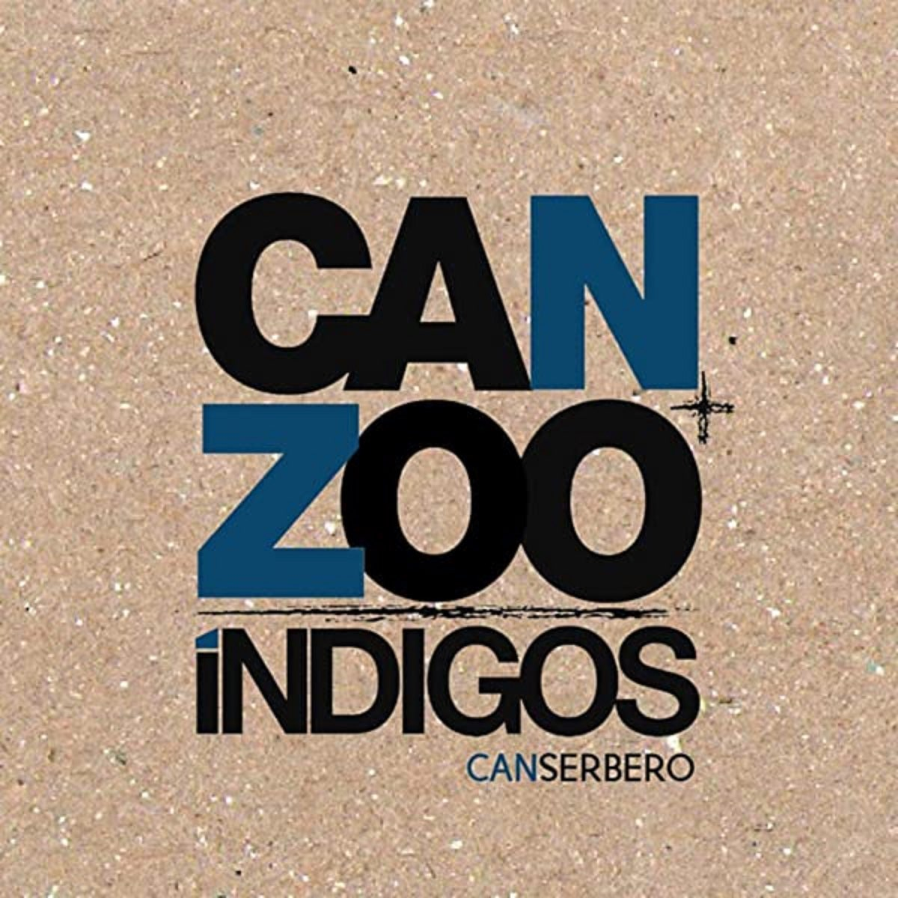
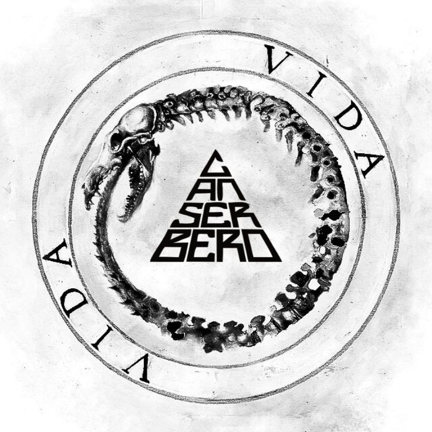
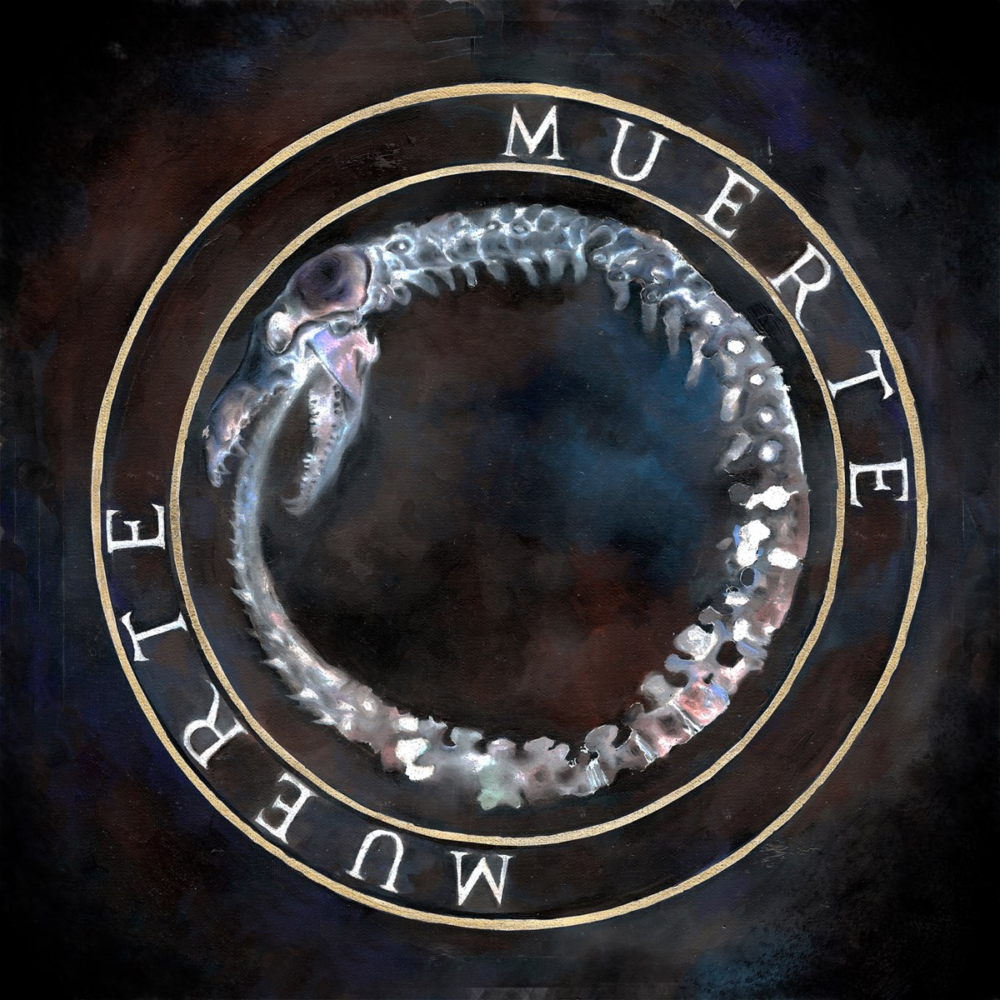
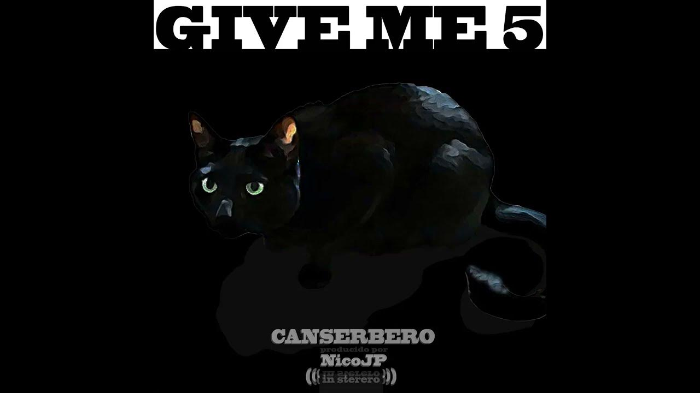

Este proyecto fue una colaboración entre Canserbero y el productor Kpu dentro del proyecto Zoo Índigos. Aquí se pueden escuchar algunos de sus primeros trabajos musicales. Las canciones mezclan críticas sociales, reflexiones sobre la vida y experiencias personales, mostrando el inicio de su estilo.

Guía Para La Acción es uno de los trabajos más tempranos de Canserbero. En este proyecto se pueden escuchar las primeras etapas de su carrera musical. Sus letras ya mostraban su estilo directo, crítico y consciente, hablando sobre problemas sociales, la realidad de la calle y la forma de pensar de los jóvenes.

“Vida” es el álbum que consolidó la fama de Canserbero. En él se pueden escuchar canciones que abordan temas como la vida, la muerte, la justicia y los sentimientos humanos.

“Muerte” es el álbum que consolidó la fama de Canserbero. En él se pueden escuchar canciones que abordan temas como la vida, la muerte, la justicia y los sentimientos humanos.

Apa y Can es un álbum colaborativo entre Canserbero y Apache, dos raperos venezolanos muy respetados. En este disco ambos artistas comparten canciones que hablan sobre la amistad, la vida, las dificultades sociales y la realidad de muchos jóvenes. Fue muy bien recibido por los fans del hip-hop.
Give Me 5 es un proyecto más corto (tipo EP o mixtape). Contiene varias canciones donde Canserbero mantiene su estilo reflexivo y crítico. Aunque no es tan largo como otros álbumes, es muy apreciado por sus seguidores y muestra su capacidad para transmitir mensajes profundos en pocas canciones.
